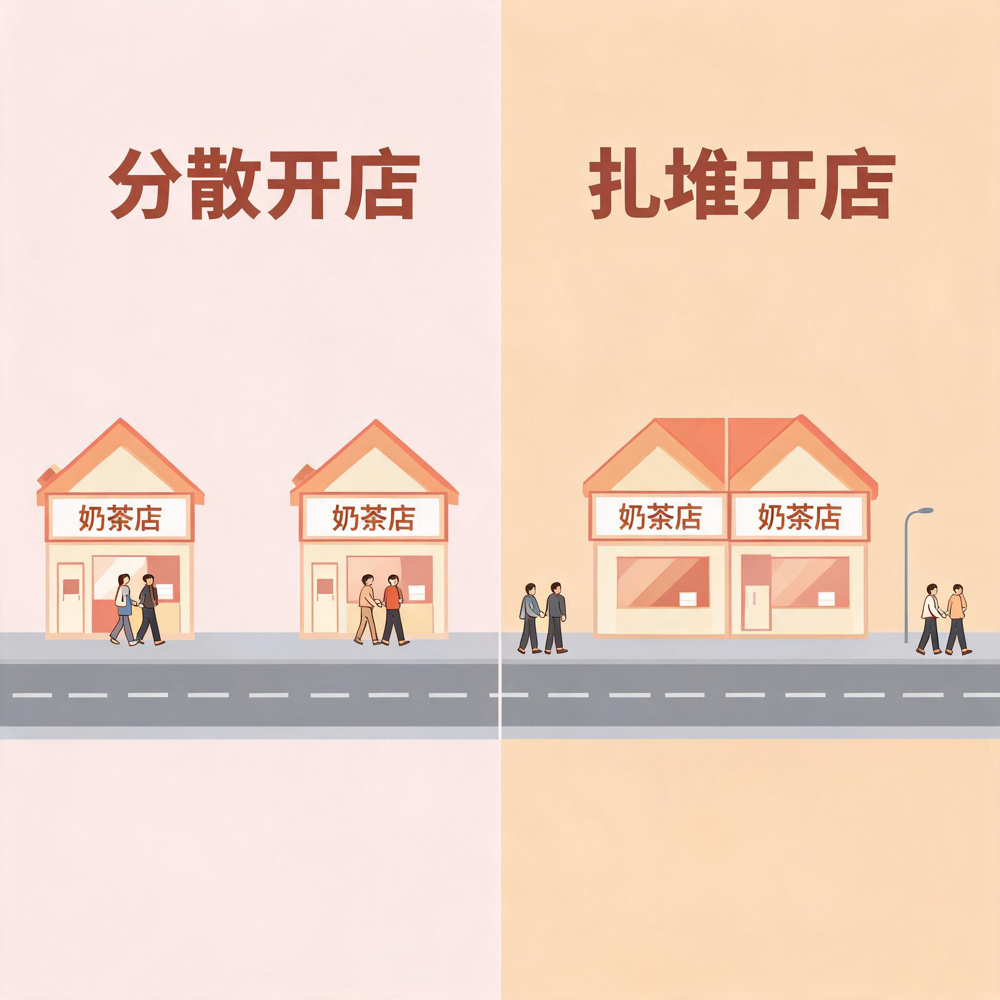

先动手：拖两家店，看谁吃掉谁
长度 1 公里的街上住满了均匀分布的顾客，每个人只去最近的奶茶店。
拖动两家店的位置，右边的分割线会实时显示市场版图，下方是顾客平均要走多远。
提示：把一家店拖到对手旁边，能瞬间抢走半个市场——这就是扎堆的诱因。
先猜一下：如果你是喜啡的老板，对手站在 750m，你会站在哪？
站在 250m 只能拿到左半边一半顾客；站在 749m 就能把对手挤到只剩右半边一点点。
贪心会逼你往对手身上贴。
自私的老板：看两家店如何被贪心拽到一起
假设两家店轮流「向最优位置移动一步」。一开始分散在街两头，看起来挺和谐。
点开始，看每一轮谁在动、为什么动。结局只有一种：都挤到正中央，谁也吃不掉谁。
点「开始博弈」，看贪心如何一步步毁掉分散的和谐。
两种结局：扎堆（纳什均衡） vs 分散（社会最优）
把两种摆法放一起比一比。左边是「每家店自私选择」的纳什均衡，右边是「让所有顾客走路最少」的社会最优。
市场份额都是各 50%，但顾客平均走路距离差了一倍。

关键矛盾：对老板来说，两种摆法市场份额一模一样（各 50%），
所以没人有动力主动分散开。但对顾客来说，扎堆让所有人平均多走一倍路。
这就是「纳什均衡 ≠ 社会最优」最直观的例子：
每个人都在做对自己最好的选择，合起来却把整条街的效率拉到最差。
那三家店呢？会打成一团
Hotelling 模型有个反直觉结论：2 家店有均衡（都到中间），3 家及以上反而没有纯策略均衡。
选店铺数量，看会发生什么。
选店铺数量，点开始看博弈过程。
现实里到处都是这条街
奶茶一条街 / 餐饮扎堆
同品类店铺挤在同一条街、同一个商场同一层。背后是博弈论在起作用：离对手远 = 白送市场。
快餐店 / 零售巨头
同类竞品门店选址高度重合。丹佛地区最近的 Target 与 Walmart 平均距离仅 2 英里，跟随机分布差几十倍。
政党立场 / 中间选民定理
选举中各党派政纲越来越像，都往中间靠。选民均匀分布在政治光谱上，靠中间才能拿到最多票——和奶茶店一模一样。
电视节目 / 短视频同质化
为什么所有平台综艺都长一个样？观众注意力均匀分布，内容方扎堆做「中间口味」最安全，差异化反而是风险。
一句话总结：扎堆是博弈的引力在拽，老板也身不由己。
只要顾客懒得走远、对手能贴上来抢市场，分散就不稳定。
想让奶茶店分散开？要么改变客流分布（让顾客聚集在多个点），要么靠规划限制（外部强制）。
光靠市场自己，最后一定都挤到街中央。